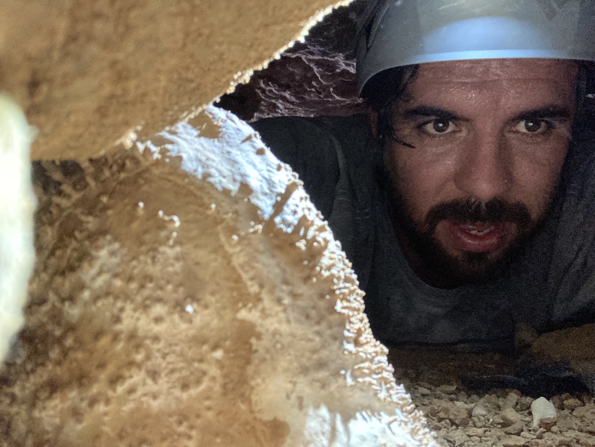

Projects
 U–Th Dating of Meteoric Calcite in Altered Fossil Corals
U–Th Dating of Meteoric Calcite in Altered Fossil Corals
When pristine aragonitic corals are scarce, sea-level histories stall. I target the meteoric calcite filling pores in altered corals and test U–Th dating. We map mineral boundaries with LA-ICP-MS and 3D micro-CT, then micro-sample for MC-ICP-MS ages. Early data show usable U and minimal detrital Th—opening a new path for sea-level constraints.

Mid-Holocene ENSO & Monsoon from Coral Trace Elements (Heron Reef)
Two ~60-year coral snapshots at ~6.9 and 5.2 ka capture sub-seasonal variability on the southern GBR. High-resolution profiles (e.g., Mg/Ca, Li/Mg, Mn/Ca, REEs) track temperature, river plumes, and water quality to test how ENSO and the Indo-Australian Summer Monsoon varied through time.